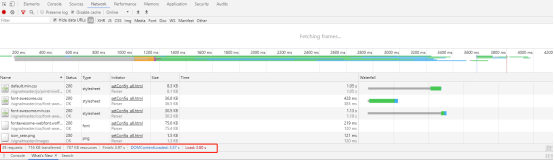

web性能优化，主要分为前端和后台两个部分性能优化，后台性能优化决定了web能不能用，前端优化决定了其好不好用，也就是牵涉到前端用户体验和web易用性等情况，所以前端性能与用户体验是有着极大的关联的。
首先，前端优化之前，我们需要知道其整体性能情况，然后对整体情况进行细分与分析，了解其每一步所损耗的时间和消耗的原由，然后进行细节优化，才能达成一个整体性能质的飞越，并不是其中一部分或者一个步骤的优化就能够解决问题的，只有优化的量才能达到性能质的飞越。
对web的性能检测一般使用浏览器或者性能检测工具

下面是我们通常进行优化的方向点：
一、HTTP请求
1.减少HTTP请求数量
80%的响应的时间是消耗在网页内容的下载上，例如：图片，样式、脚本、Flash等。所以减少请求次数以是缩短响应时间的关键之处。
I. 合并文件：将相关代码文件进行合并
II. Css Sprites：将多张图片合并成单张图片，通过css来控制什么地方显示图片的那个位置。
III. 图片映射：也是将多图拼在一起，然后通过坐标来控制。通常在页面中连续的时候才有用，比如导航条。
IV. 行内图片(Base64编码): 通过编码的字符串将图片内嵌到网页文本中。
2.避免重定向
重定向是一个比较常使用的技术手段，比如服务器地址进行迁移，修改了请求的url地址，这时通常会使用重定向，把访问原网址的用户重定向到新的url。
由于浏览器访问地址是一连串的过程，如果重定向的话，就需要在访问过程中重复发起一连串的动作，会消耗很多时间，因此避免出现多次重定向地址或资源的访问。
3.DNS预解析
当浏览器与web服务器建立连接时，它是需要进行DNA解析的，将域名解析为IP地址。首先我们来了解一下它的过程：
a.先检查本地 hosts 文件中是否有映射，有则使用；
b.查找本地 DNS 缓存，有则返回；
c.根据配置在 TCP/IP 参数中设置 DNS 查询服务器，并向其进行查询，这里先称为本地 DNS；
d.如果该服务器无法解析域名（没有缓存），且不需要转发，则会向根服务器请求；
e.根服务器根据域名类型判断对应的顶级域名服务器（.com），返回给本地 DNS，然后重复该过程，直到找到该域名；
f.当然，如果设置了转发，本地 DNS 会将请求逐级转发，直到转发服务器返回或者也不能解析。
所以减少DNS的查询次数非常重要，页面加载时就尽量避免额外耗时。为了减少DNS的询次数，最好的解决方法就是在页面中减少不同的域名请求的机会。
4.使用CDN
使用内容分发网络，把你的网站内容分散到多个、处于不同地域位置的服务器上可以加快下载速度。
二、浏览器缓存
对一个网站而言，CSS、javascript、logo、图标这些静态资源文件更新的频率都比较低，而这些文件又几乎是每次http请求都需要的，如果将这些文件缓存在浏览器中，可以极好的改善性能。通过设置http头中的cache-control和expires的属性，可设定浏览器缓存，缓存时间可以是数天，甚至是几个月。
在某些时候，静态资源文件变化需要及时应用到客户端浏览器，这种情况，可通过改变文件名实现，即更新javascript文件并不是更新javascript文件内容，而是生成一个新的JS文件并更新HTML文件中的引用。
使用浏览器缓存策略的网站在更新静态资源时，应采用逐量更新的方法，比如需要更新10个图标文件，不宜把10个文件一次全部更新，而是应该一个文件一个文件逐步更新，并有一定的间隔时间，以免用户浏览器忽然大量缓存失效，集中更新缓存，造成服务器负载骤增、网络堵塞的情况。
三、页面静态资源
1. 将CSS样式表放在顶部
如果将css样式定义放在页面中或者页面底部，会出现短暂白屏或者某一区域短暂白板的情况，这和浏览器的运营机制有关的，不管页面如何加载，页面都是逐步呈现的。所以在每做一个页面的时候，用Link标签把每一个样式表定义放在head中。
2.将javascript脚本放在底部
浏览器在加载css文件时，页面逐步呈现会被阻止，直到所有css文件加载完毕，所以要把css文件的引用放到head中去，这样在加载css文件时不会组织页面的呈现。但是对于js文件，在使用的时候，它下面所有也页面内容的呈现都会被阻塞，将脚本放在页面越靠下的地方，就意味着越多的内容能够逐步呈现。
3.使用外部javascript和CSS
内联js和css其实比外部文件有更快的响应速度，那为什么还要使用外部呢？因为使用外部的js和css可以让浏览器缓存他们，这样不仅HTML文档大小减少，而且不会增加HTTP请求数量。另外，使用外部js和css可以提高组件的可复用性。
4.组件压缩
通过压缩工具将js、css、html文件进行压缩，减少项目文件大小。
5.图片优化
图片的优化主要是针对图片大小、格式、展现形式进行处理，对于图片资源处理网上介绍的方式有很多，在这里就不进行详细的介绍。